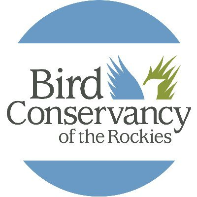

- Software / Programming
- GIS/Remote Sensing: Agisoft Metashape Professional, ArcGIS Pro, DJI Terra, ENVI, QGIS
- Data Analysis: Python (ArcPy, Keras, Pandas, PyTorch, Scikit-Learn, TensorFlow), R
- Web Development: HTML, CSS, JavaScript (Bootstrap, Leaflet, D3, jQuery), Git
- Professional Experience
-
Center for the Advancement of Spatial Informatics Research and Education, University of New Mexico
Albuquerque, New Mexico- Postdoctoral Research Fellow (Dec 2024 - Present)
- Collaborating with US Fish and Wildlife on testing implementation of AI-assisted aerial imaging surveys for whooping cranes and waterfowl on the TX Gulf Coast
- Doctoral Research Assistant (Aug 2021 - Dec 2024)
- Project manager for two cooperative agreements with US Fish and Wildlife developing deep learning models for wildlife inventory applications
- Lab Manager, Center for the Advancement of Spatial Informatics Research and Education (Dec 2019 - Aug 2021)
- Managed ASPIRE drone imaging services, supported student and faculty research through resource coordination/troubleshooting, mentoring
- Master's Research Assistant (Aug 2017 - Dec 2019)
- Aerial image collection, ground referencing, and post-processing on behalf of US Army Corps of Engineers
-
 Bosque Ecosystem Monitoring Program
Bosque Ecosystem Monitoring Program
University of New Mexico, Bosque School
Albuquerque, New Mexico- Ecologist/Interim Data Manager (Jan 2017 - Aug 2017)
- Completed full proof of core long-term ecological monitoring datasets spanning 20 years; drafted new and expanded on existing QAQC protocols
- Provided GIS support and map design for grant applications, educational products for K-12 students, publicly available web maps of long-term ecological data
- Biologist (Jan 2014 - Aug 2015)
- Managed tamarisk leaf beetle monitoring project for two seasons: scheduled field collections, organized database, coordinated with collaborating agency and nonprofit partners, wrote and submitted two reports to funders in fulfillment of grant obligations
- TA and guest lecturer for UNM's Bosque Internship class
-
Bird Conservancy of the Rockies
Contractor for the US Forest Service
Flagstaff, Arizona- New Mexico Seasonal Field Crew Leader, Mexican Spotted Owl Occupancy Survey (Mar 2016 - Aug 2016)
- Supervised three remote field crews tasked with collecting owl occupancy data at 100 field sites located in National Forest land in New Mexico
-
 Mexican Grey Wolf Recovery Program,
Mexican Grey Wolf Recovery Program,
US Fish and Wildlife Service- Volunteer Field Technician (Oct 2015 - Mar 2016): Alpine, Arizona
- Daily radiotelemetry of collared wolves; triangulation in mountainous terrain; offhighway 4WD driving in winter conditions
- Volunteer Facility Caretaker (Feb 2014 - Oct 2015): Albuquerque, New Mexico
- Weekly animal care and pen maintenance at a remote pre-release facility
- Selected Publications
- Converse, R.L., Lippitt, C.D., Sesnie, S.E., Harris, G.M., Butler, M.J., Stewart, D.R., 2025. A framework for assessing reliability of observer annotations of aerial wildlife imagery, with insights for deep learning applications. PLOS ONE 20, e0316832.
- Converse, R.L., Lippitt, C.D., Koneff, M.D., White, T.P., Weinstein, B.G., Gibbons, R., Stewart, D.R., Fleishman, A.B., Butler, M.J., Sesnie, S.E., Harris, G.M., 2024. Remote sensing and machine learning to improve aerial wildlife population surveys. Front. Conserv. Sci. 5.
- Converse, R.L., Lippitt, C.D., & Lippitt, C.L. 2021. Assessing Drought Vegetation Dynamics in Semiarid Grass-and Shrubland Using MESMA. Remote Sensing, 13(19), 3840.
- Converse, R.L., Shaw, D., Eichhorst, K.D., and Leinhart, M. 2016. Bringing Citizen Science into Land Management: A Case Study of the Bosque Ecosystem Monitoring Program. Journal of Science Communication: 15(03)
- Converse, R.L, Baron-Deutsch, M., Gjuillin, A., and Rowe, A.J. 2014. Reproduction of Reintroduced North American River Otter (Lontra Canadensis) Confirmed in New Mexico. IUCN Otter Specialist Group Bulletin. 31(1): 35 – 39